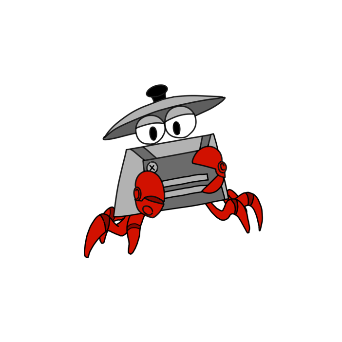
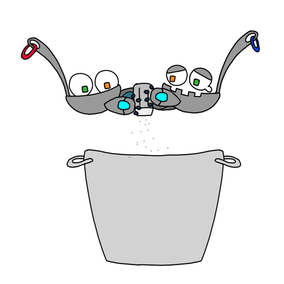
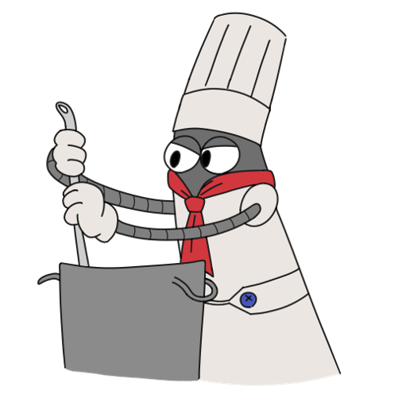
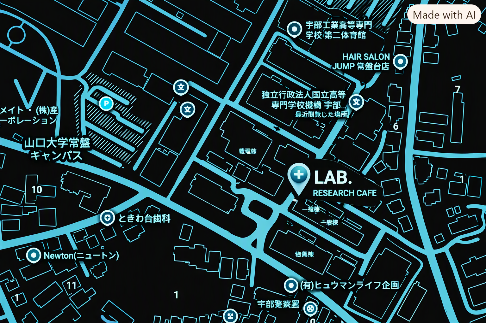

第3回「スープの実験室」を開催します
味の組み合わせを自由に試す、参加型のミニワークショップ。
↗


ロボットと支え合う社会。我々の研究室も共同研究を行う一つである。
FOOD × SCIENCE × COMMUNITY
研究室のような空間で、スープを味わい、アイデアを交換する。LAB.は、日常に小さな発見をつくるカフェです。
OUR PHILOSOPHY
食材を観察し、組み合わせを試し、誰かと感想を交わす。ここは、食べることから始まる小さな研究室。正解よりも好奇心を大切にしています。
ああああ
FROM THE LAB
旬の野菜とスパイスを組み合わせた季節限定メニューを開発中。完成をお楽しみに。
味の組み合わせを自由に試す、参加型のミニワークショップ。
↗ラボの日々の活動やメニュー情報をこちらからお届けします。
↗FOLLOW OUR EXPERIMENTS
[ 002 — THE TEAM ]
好奇心を持ち寄る、LAB.の研究員たち。
HEAD RESEARCHER / SOUP
素材の個性を見つけて、驚きのある味にするのが得意。
COMMUNITY / IDEAS
人とアイデアが出会う場づくりを研究中。
DESIGN / RECORD
ラボで生まれる小さな発見を、形にして記録する。
DESIGN / RECORD
ラボで生まれる小さな発見を、形にして記録する。
※メンバー名・プロフィールはサンプルです。実際のスタッフ情報に差し替えてください。
[ 003 — SOUP STUDIES ]
季節と好奇心から生まれる、今日の研究成果。
甘みを引き出したトマトに、香ばしいハーブを重ねた定番の一杯。
青菜と豆のやさしいコク。仕上げのレモンがアクセント。
数種類のきのこの香りを閉じ込めた、深みのあるクリームスープ。
※メニュー・価格はサンプルです。アレルギー情報や販売状況は実際の内容に更新してください。
[ 004 — LAB LOG ]
LAB.の最新情報、イベント、研究記録。
旬の野菜とスパイスを組み合わせた季節限定メニューを開発中。完成をお楽しみに。
味の組み合わせを自由に試す、参加型のミニワークショップ。
ラボの日々の活動やメニュー情報をこちらからお届けします。
たくさんのアイデアと感想が集まった一日をレポートします。
[ 005 — LOCATION ]
好奇心を持って、気軽にお越しください。

VISIT THE LAB
※住所・営業時間は仮情報です。公開前に実際の情報へ変更してください。